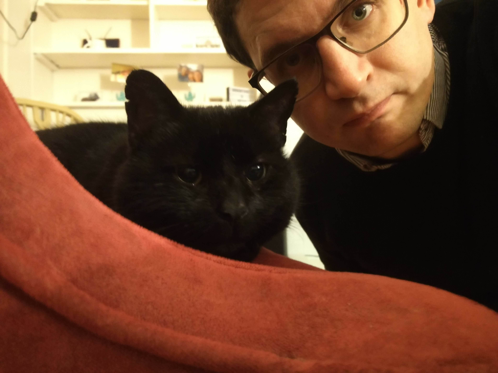

Automotive perception
Driver monitoring, drowsiness-related perception, camera calibration and pose estimation. Experience developing and validating sensing systems for automotive applications.
Computer vision · Embedded AI · Galway, Ireland
I'm Diarmaid, a computer vision and embedded AI engineer with a PhD and a background in automotive perception, computational imaging and intelligent devices.
I turn algorithms into practical software, from the first prototype to embedded deployment and customer delivery.

Connecting cameras, sensors and software to make sense of the real world.
Driver monitoring, drowsiness-related perception, camera calibration and pose estimation. Experience developing and validating sensing systems for automotive applications.
Image stabilisation, optical flow, motion estimation, denoising and neural-network-based image enhancement. Combining IMU and vision data for more capable imaging pipelines.
Taking research prototypes into C/C++ and embedded Linux systems, working within real-time and compute constraints. Building the tools, datasets and demonstrations needed along the way.
A career across computer vision R&D, product engineering, technical leadership and startup development.
Senior Staff R&D Engineer
Automotive perception and driver monitoring systems, with a focus on camera calibration, embedded vision and automotive sensing.
Senior Staff R&D Engineer
Computer vision and computational imaging for automotive, mobile and embedded applications. Developed customer demonstrations, embedded motion detection, imaging pipelines and synthetic datasets using Blender and simulated vehicle interiors.
Lead Developer · Machine Learning & Analytics Research Engineer
Led teams developing embedded Linux software for industrial environmental monitoring, microcontroller-based asset tracking and pattern-matching silicon. Earlier work included predictive analytics for electrical-grid load forecasting.
Co-founder & CTO
Built a browser-based webcam eye-tracking platform and real-time gesture-control apps for iOS. Brought Wink Camera to the App Store, reaching the top ten paid photography apps in eight countries.
Research foundations
My PhD research at the University of Galway's Connaught Automotive Research Group focused on camera-based collision avoidance systems, working closely with a global automotive supplier.
That work built the foundations of my approach today: investigate carefully, implement rigorously and test against real-world constraints. My background includes research publications, multiple patents and transferring research into commercial systems.
Read my publications on Google ScholarWorking across algorithm development, simulation and embedded implementation.
Interested in computer vision, embedded AI or bringing an idea into a working system? Find me on LinkedIn, explore my code or read my research.
Away from the screen, I enjoy cycling, swimming and repairing things.